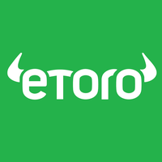

eToro est l'une des plateformes les plus agréables du marché : interface léchée, offre multi-actifs (actions, ETF, crypto, matières premières), et le CopyTrading qui permet de répliquer les positions d'autres investisseurs. Pour découvrir les marchés, s'exposer à la crypto ou tester le copy-trading avec de petites sommes, c'est redoutablement efficace. Mais pour un investisseur français qui construit un patrimoine en ETF sur le long terme, les limites sont réelles : pas de PEA ni d'enveloppe fiscale avantageuse, un compte libellé en dollars (frais de change à chaque mouvement), des frais de retrait et d'inactivité, et une omniprésence des CFD à effet de levier, qui n'ont rien à faire dans une stratégie patrimoniale. Excellent pour explorer, à éviter comme colonne vertébrale.
Découvrir eToroeToro, c'est d'abord une promesse : mettre l'investissement à la portée de tous, dans une app aussi simple qu'un réseau social. Le pari est largement réussi côté expérience. Actions et ETF réels à 0 % de commission, crypto intégrée, matières premières, et surtout le CopyTrading, la fonction signature qui permet de répliquer automatiquement le portefeuille d'un investisseur que tu choisis. Sur le papier, l'outil rêvé du débutant. En pratique, il faut savoir lire entre les lignes.
La première chose à comprendre, c'est que « 0 % de commission » ne veut pas dire « gratuit ». eToro se rémunère ailleurs : sur le spread (l'écart entre prix d'achat et de vente), sur la conversion de devise (ton compte est en dollars, chaque dépôt et retrait en euros subit un frais de change), sur les retraits (frais fixe) et sur l'inactivité (frais mensuel après une longue période sans connexion). Pour un investisseur qui fait un DCA discret et laisse courir, ces frais restent modérés ; pour quelqu'un qui bouge souvent ou retire régulièrement, ils s'accumulent.
eToro en un coup d'œil
| Type | Courtier multi-actifs + réseau social d'investissement (actions, ETF, crypto, matières premières, CFD) |
| Ticket d'entrée | Faible : achats fractionnés possibles dès quelques dollars |
| Commission actions/ETF | 0 % de commission sur les actions et ETF réels (hors spread et change) |
| Frais à surveiller | Frais de change (compte en USD), frais de retrait fixe, frais d'inactivité mensuels après longue absence |
| Fonction phare | CopyTrading : répliquer automatiquement le portefeuille d'autres investisseurs |
| Enveloppes fiscales FR | Aucune : pas de PEA, pas de PEA-PME. Compte-titres étranger uniquement |
| Régulation | Groupe régulé (dont CySEC en Europe) ; fonds clients ségrégués |
| Point de vigilance | Omniprésence des CFD à effet de levier : produits spéculatifs, majorité de comptes perdants |
Points forts et points faibles
Ce qu'on aime
- Interface parmi les plus agréables et pédagogiques du marché
- Offre multi-actifs réunie dans une seule app (actions, ETF, crypto, matières premières)
- Actions et ETF réels à 0 % de commission, achats fractionnés dès quelques dollars
- CopyTrading unique pour s'inspirer d'autres investisseurs (avec prudence)
- Excellent terrain de découverte de la crypto pour un débutant
Ce qu'on aime moins
- Aucune enveloppe fiscale française : pas de PEA, fiscalité moins optimisée
- Compte en dollars : frais de change à chaque dépôt et retrait en euros
- Frais de retrait fixe et frais d'inactivité qui pénalisent les petits comptes dormants
- CFD à effet de levier mis en avant : dangereux pour un débutant
- Déclaration fiscale à ta charge (compte étranger 3916-bis, plus-values, crypto)
Le CopyTrading : génial sur le papier, à manier avec prudence
C'est LA fonction qui a fait la réputation d'eToro. Tu choisis un investisseur, tu alloues une somme, et ton compte réplique automatiquement ses achats et ses ventes au prorata. Séduisant, surtout quand on débute et qu'on ne sait pas par où commencer. Mais deux pièges guettent. D'abord, les performances passées d'un « trader populaire » ne préjugent en rien de ses résultats futurs, et beaucoup brillent sur des paris concentrés qui finissent par se retourner. Ensuite, copier quelqu'un ne t'apprend rien : tu délègues sans comprendre, ce qui est l'inverse de la démarche que je défends. Si tu veux tester le CopyTrading, fais-le avec une petite fraction, en le considérant comme une expérience, jamais comme ton allocation principale : un simple ETF World en DCA reste une base plus solide et moins chère.
La fiscalité : le vrai talon d'Achille pour un Français
C'est le point que trop de contenus oublient. eToro n'ouvre ni PEA ni enveloppe fiscale française : tu détiens un simple compte-titres à l'étranger. Concrètement, cela veut dire trois choses. Un : tu dois déclarer chaque année l'existence de ce compte étranger (formulaire 3916-bis), sous peine d'amende. Deux : tes plus-values sur actions et ETF sont imposables à la flat tax de 31,4 % (2026), sans l'exonération d'impôt sur le revenu qu'offre un PEA après cinq ans. Trois : tes gains crypto relèvent de leur propre régime (flat tax, formulaire 2086). Pour bien comprendre l'écart, compare avec mon article PEA vs CTO : sur un horizon long, l'absence de PEA coûte cher. eToro peut compléter une stratégie, il ne devrait pas en être le socle fiscal.
Pour qui (et pour qui pas)
eToro est fait pour toi si tu veux une app unique pour t'exposer à la crypto, tester le CopyTrading avec de petites sommes, ou acheter des actions fractionnées américaines sans te prendre la tête, en gardant en tête que ce sera dans un cadre fiscal non optimisé. C'est un excellent bac à sable de découverte.
Passe ton chemin si ton objectif est de construire un patrimoine ETF long terme de façon fiscalement efficace : un PEA chez un courtier français (voir mon comparateur courtiers) fera nettement mieux. Et fuis les CFD à effet de levier mis en avant : ils ne relèvent pas de l'investissement mais de la spéculation, comme détaillé dans mon guide sur le levier.
Comment ouvrir un compte (et le parcours à connaître)
Inscription 100 % en ligne, vérification d'identité (KYC) obligatoire, puis premier dépôt (compte en dollars). Prends le temps de comprendre le parcours : eToro pousse naturellement vers le CopyTrading et les CFD dès l'accueil. Si ton objectif est d'investir sereinement en actions réelles ou en crypto, reste sur ces produits et ignore le levier. Et note bien : un compte eToro est un compte à l'étranger, à déclarer chaque année (formulaire 3916-bis), comme expliqué plus bas.
Transparence : ce lien n'est pas affilié. Il mène au site officiel et je ne touche rien si tu ouvres un compte. Si cela change un jour, je l'indiquerai ici.
 Vidéo bientôt disponible · abonne-toi sur YouTube
Vidéo bientôt disponible · abonne-toi sur YouTube
Questions fréquentes
eToro permet-il d'ouvrir un PEA ?
Non. eToro ne propose ni PEA ni PEA-PME : tu investis via un compte-titres à l'étranger, sans l'avantage fiscal du PEA (exonération d'impôt sur le revenu sur les plus-values après cinq ans, hors prélèvements sociaux). Pour une stratégie ETF long terme optimisée fiscalement, un PEA chez un courtier français reste supérieur. eToro se justifie surtout pour la crypto, le CopyTrading ou des actions fractionnées, pas comme enveloppe patrimoniale principale.
Quels sont les vrais frais d'eToro puisque c'est « 0 % de commission » ?
Le 0 % concerne la commission sur les actions et ETF réels, mais eToro se rémunère ailleurs : le spread (écart achat/vente), les frais de change (ton compte est en dollars, donc chaque dépôt et retrait en euros subit une conversion), un frais de retrait fixe, et un frais d'inactivité mensuel après une longue période sans connexion. Pour un investisseur qui bouge peu, l'addition reste raisonnable ; pour quelqu'un qui retire souvent ou laisse dormir un petit compte, ces frais grignotent la performance.
Le CopyTrading, bonne ou mauvaise idée ?
Ni l'un ni l'autre par principe, tout dépend de l'usage. Copier automatiquement un investisseur peut être un bon moyen de s'initier, à condition de le faire avec une petite fraction de ton capital et en comprenant que les performances passées ne garantissent rien. Le danger, c'est d'y mettre l'essentiel de son épargne en délégant à quelqu'un dont tu ignores la stratégie réelle et la prise de risque. Considère-le comme une expérience, jamais comme ton allocation cœur : un ETF World en DCA reste plus solide et moins cher.
eToro est-il sûr et régulé ?
eToro est un groupe régulé (notamment via CySEC en Europe) et les fonds des clients sont ségrégués des comptes de la société. Le risque n'est donc pas tant celui d'une « arnaque » que celui des produits eux-mêmes : les CFD à effet de levier, très mis en avant, font perdre de l'argent à une majorité d'utilisateurs particuliers. La sécurité de la plateforme ne te protège pas d'un mauvais produit : la vraie prudence consiste à rester sur les actifs réels et à ignorer le levier.
Comment déclarer eToro aux impôts en France ?
Trois obligations. D'abord, déclarer chaque année l'existence de ton compte à l'étranger (formulaire 3916-bis), même sans retrait : l'oubli est sanctionné d'une amende. Ensuite, tes plus-values sur actions et ETF sont soumises à la flat tax de 31,4 % (2026) l'année où tu vends. Enfin, tes gains crypto relèvent de leur propre régime (flat tax, formulaire 2086). eToro ne fournit pas d'IFU prérempli français : la déclaration est à ta charge, ce qui alourdit la gestion par rapport à un courtier français.
Cet avis reflète mon expérience personnelle et mes recherches à la date de mise à jour. Les frais, offres et conditions évoluent : vérifie toujours les conditions actuelles sur le site officiel avant d'ouvrir un compte. Investir comporte des risques de perte en capital. Cet avis ne constitue pas un conseil en investissement personnalisé.